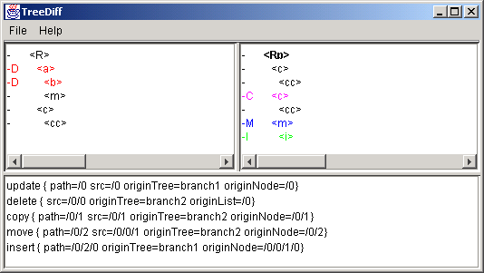

The "3DM" XML 3-way Merging and Differencing Tool
Keywords: tree, diff, differencing, merge, merging, 3-way, XML,
treediff, xmldiff
1. What is 3DM?
The 3DM tool is a tool for performing 3-way merging and differencing
of XML files. Unlike line-based tools, such as diff and
diff3, 3DM is aware of the structure of the processed XML
documents. 3DM is not limited to update/insert/delete operations,
it also handles
moves and copies of entire subtrees. 3DM is not
reliant on edit histories; the only input needed are the XML files. The
tool was implemented as a part of my master's thesis
(2.0M pdf, updated 26/12/2001,
3.9M .ps.gz, updated 26/12/2001)
, which is the currently recommended reading for those interested
in detailed examples (chapter 2 and 10) and the algorithms (chapters 5-9).
A more elegant (in my opinion) variation of the algorithm discards support
for copy operations, at the same time gaining enormously in clarity and
simplicity. The algorithm is described in the paper
Tancred Lindholm. A Three-way Merge for XML Documents.
In ACM Symposium on Document Engineering, October 2004
An author's version can be found
here.
Building on the ideas of 3dm, for XML differencing there is also the
Fugo XML Differencing tool.
Compared to 3dm, this tool is much faster an less memory intensive, due to a much
simpler matching stage. If you are looking for an XML differencing tool, you
may want to take a look at it. Update Jun 26, 2009: Note that the
project is now located at http://fc-xmldiff.googlecode.com/,
as the old project site (hoslab.cs.helsinki.fi) has been decomissioned.
2. News
- 26.6.2009: Updated link to the Fugo XML Differencing tool
- 7.3.2006: Updated web pages, added link to DocEng 2004 paper
- 7.2.2006: Releases 0.1.0 and 0.1.5beta1
- 1.1.2006: Code that handles XML specifics (e.g. comments,verbatim differencing, DTDs) better
is available in CVS on the verbatim branch.
3. An XML differencing example
Consider the two XML files (merge case A16 in the thesis):
b.xml
|
2.xml
|
<R>
<a>
<b/>
<m/>5
</a>
<c>3
<cc/>
</c>
</R> |
<R>
<c>
<cc/>
</c>
<c>
<cc/>
</c>
<m/>
</R> |
The numbers are node identifiers, assigned according to the BFS traversal
of the XML parse tree. They are not part of the XML file. The difference
is obtained by running:
3dm --diff b.xml 1.xml
And looks like this:
<?xml version="1.0" encoding="UTF-8"?>
<diff>
<diff:copy src="3" dst="1" />
<diff:copy src="3" dst="1" />
<diff:copy src="5" dst="1" />
</diff>
|
The src attribute refers to nodes in b.xml by their
node identifier. The diff says that 2.xml is formed by setting
the children of <R> to the subtrees rooted at node 3 (twice)
and node 5 from b.xml. The differencing algorithm and the format
of the diff is described in chapter 8 of the thesis.
A note about copy operations: in some cases, you may not
want copy operations in the diff, e.g., if copies do not make sense with
the input that you are using. In this case, use the -c
flag to increase the threshold for copies to some large value, for instance
-c 2000000000.
This will effectively turn off the search for copies during matching.
4. A 3-way merging example
Consider the three XML files shown below: a base file (b.xml
) and two parallell versions (branches), 1.xml and 2.xml
, obtained by editing b.xml in different ways. When performing
a 3-way merge of these files, we get a file that contains both the changes
between b.xml and 1.xml as well as the changes between
b.xml and 2.xml. The changes between b.xml
and 1.xml are:
- <R> is updated to <Rp>
- <i> has been inserted below <m>
The changes between b.xml and 2.xml are:
- The subtree rooted at <a> has been deleted, except
for <m> which is moved as the last child of <R>
- The subtree rooted at <c> has been copied
1.xml
|
b.xml
|
2.xml
|
<Rp>
<a>
<b/>
<m>
<i/>
</m>
</a>
<c>
<cc/>
</c>
</Rp>
|
<R>
<a>
<b/>
<m/>
</a>
<c>
<cc/>
</c>
</R> |
<R>
<c>
<cc/>
</c>
<c>
<cc/>
</c>
<m/>
</R>
|
The 3-way merge is performed by running the command shown below. You can
ignore the meaning of -c 0 for now.
3dm -c 0 --merge b.xml 1.xml 2.xml
The result is shown below. Note how the changes from both branches have
been integrated.
<?xml version="1.0" encoding="UTF-8"?>
<Rp>
<c>
<cc />
</c>
<c>
<cc />
</c>
<m>
<i />
</m>
</Rp>
|
The merging algorithm is described in chapers 6-7 of the thesis. As in the differencing case,
the threshold for detecting copied data can be controlled with the -c
option.
4. Obtaining 3DM
The Java source of 3DM is released under the Lesser Gnu Public License
(LGPL). The latest version can be found form the Files section of the
3dm project page.
To save you a few clicks, here are links to release 0.1.0:
To run 3dm, you will also need a SAX2 compilant XML parser (the
default parser is the Xerces parser from the
Apache project) and the GNU java-getopt package ( home
page , local copy of
java-getopt-1.0.8.jar ).
5. Running 3DM
Running 3dm is straightforward, just start java with Xerces,
java-getopt and 3dm.jar (or the directory of compiled classes) in the
classpath and tdm.tool.TreeDiffMerge as main class. Below
are shell scripts for Linux and Windows.
For instance:
java -cp java-getopt-1.0.8.jar:xerces.jar:3dm.jar tdm.tool.TreeDiffMerge
6. Visualizing the merge
3dm can produce a "merge log" that lists the changes in the merged
file compared to the base version. I've written a quick hack to
visualize the merge log (sources
.tar.gz , sources .zip and .jar file). The main class is
TreeDiff, and it requires a SAX2 parser in the classpath; the
.jar file is compiled for Xerces. The figure below visualizes
the merge log obtained by running the previously mentioned merge
example.

7. Current Limitations
The 0.1.0 release concentrated on core features, leaving out any "XML corner cases",
such as:
- DTD processing. 3DM simply assumes the DTD of the input files are
identical
- More intelligent processing of entities. Currently 3DM (or actually
the XML parser) expands all entities. A better alternative would be to merge
entity declarations.
See chapter 10 of the thesis for a more in-depth description of the limitations.
8. Development
An open source development project is being set up here at berliOS. Some links:
$Id: index.html,v 1.11 2009-06-26 08:47:25 ctl Exp $
|

|